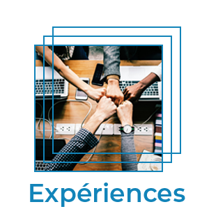
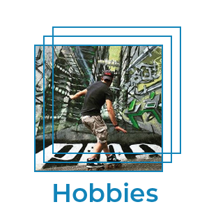

curriculum vitae
SAVOIR
la connaissance
- Maîtrise de l'outil informatique, bureautique, réseaux sociaux...
- Maîtrise des différentes techniques de vente.
- les principes du merchandising
- les méthodes de gestion des stocks
- les règlementations d'hygiène et de sécurité en vigueur
- les caractéristiques des produits
SAVOIR-FAIRE
la pratique
- Gérer une surface de vente (merchandising, réassort et optimisation des stocks, achats, suivi clientèle, respect des objectifs marge et chiffre d’affaire).
- Analyser les chiffres et les argumenter
- Connaître les tendances du marché dans son secteur
- Organiser un magasin selon la politique commerciale des gérants et la stratégie générale de l'enseigne
SAVOIR-ETRE
les attitudes
- Aisance dans les relations professionnelles.
- Être force de proposition en termes d'actions correctrices, d'améliorations.
- Savoir motiver son équipe et impulser une dynamique commerciale, être à l'écoute
- Être réactif dans la gestion des aléas et des problèmes

2013-2018
Responsable de Magasin
Cash Piscines de Chambray lès Tours (37)
- Analyser et suivre les indicateurs commerciaux
- Constituer, former, animer une équipe
- Accueil, recherche des besoins, fidélisation de la clientèle
- Gestion du stock, achats fournisseurs, service après vente
- Réalisations des devis, projets tous types de construction piscines, SPA particuliers/professionnels.
- Travail en réseau et mise en relation avec les partenaires du secteur d'activité (pisciniers, maçons, terrassiers, clients)
2012-2013
Vendeur Magasinier Cariste
Cash Piscines de Chambray lès Tours (37)
- Accueil, vente, tenue de caisse
- Déchargements, réceptions commandes, mise en rayons
- Rangement, optimisation, nettoyage magasin et stock
- Vente et service après vente
- Réalisations de devis, préparations de commandes.
2005-2011
Cubicolor, Gérant Sarl Terranova
Tours (37), Paris (75)
- Recherche et import d'un nouveau produit de décoration floral
- Buisness Plan, études de marchés. Vente directes: GMS, salons professionnels et grand public, C.E., internet...
- Créations de site internet de vente en ligne, packaging et display pour GMS.
-
 Quelques vidéos sur Youtube
Quelques vidéos sur Youtube
2001-2003
Technico-commercial Bureau d'études
AFL EDTO Saint Herblain (44)
- Réalisations de devis pour VRP, professionnels(menuisiers, charpentiers)
- Dessins CAO (cadkey98) et mise en fabrications
- Demandes de devis, Commandes fournisseurs et Ventes
2001-2002
Magasinier
AFL EDTO Saint Herblain (44)
- Préparation de commandes, inventaires
- Optimisation et réorganisation du stock
1999-2001
Facteur
Villepinte (93), Saint-Herblain (44)
- Trier et distribuer les lettres colis
- Dépots et rammasse des points de collectes
1993-1998
Commercial
COGEFRA Tours (37)
- Prospections et dépôt-vente auprès des comités d'entreprises
- Secteur nord d'une ligne Bordeaux/Grenoble
- Travail sur listing des Chambres de commerces et prospections directes
2018
Caces R389 1 3 5 & SST
- 3 semaines en centre et 1 semaine en stage
- Stage effectué à la Banque Alimentaire de Touraine
- Pratique et théorie sur engins de catégories 1,3 et 5
- Sauveteur Secouriste au Travail
2012 - 2018
Formations internes/externes Cash Piscines
- Traitements de l'eau en piscine privée
- Diverses formations techniques piscine: filtrations, couvertures, traitements
- Merchandising Cash Piscines
- Initiation à Excel 16 heures
2002-2003
Formation interne. Dessinateur CAO Bureau d'Etudes
EDTO Saint Herblain (44).
- Réalisations de plans sur Cadkey98
- Numérisations d'échantillons en 3D
1999-2000
Formation Facteur La Poste
Villepinte (93).
- Trier, distribuer les lettres et colis
- Relève des points de collectes et dépôts
- Livraisons
1991 - 1993
BEP/CAP Vente Action Marchande
Lycée François Clouet, Tours(37)

Hobbies en vidéo
Informatique
J'ai débuté par un Amstrad, puis un Philips VG8020 et je ne m'arrête plus...
- Ancien joueur de Test Drive, Space Invaders, Quake 3 FPS , Battlefield 3 & 4
- Créations de sites, retouches de photos...
- Connaissances: Pack office, Photoshop, Wordpress, Joomla, Prestashop, Flash MX, Frontpage, Dreamwaver, Cadkey98, Sage, Octave ERP...
- Assemblage de mes pc
Activités sportives
- Course à pied, 2 à 3 fois 10km /semaine.
- Roller quad niveau intermédiaire
Musique
- Guitare acoustique et électrique niveau débutant
- Batterie - Ecole Agostini Tours (37) 4 ans
- Violon & Solfège - Conservatoire de Tours (37) 1 an
Divers
- Permis
- Anglais scolaire